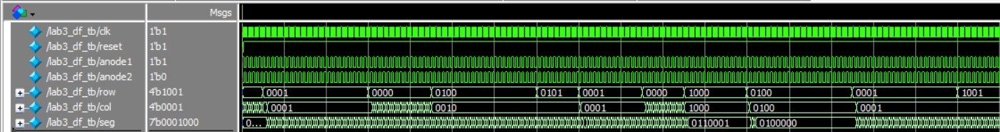

Lab3: Keypad Scanner
Introduction
This lab again expanded upon the previous two labs by adding a keypad scanner to the existing multiplexed 7-segment display. The keypad contains each hexadecimal digit and upon button press, the 7-segment displays will record the most recent two inputs. The keypad will only record one button push at a time and will hold the value of the first button pressed if multiple are pressed simultaneously.
Design and Testing Methodology

This lab continued to build on the FPGA desing of the previous two labs. Again, this solution began with the clock divider module, as discussed in the previous labs, with a clk output of a little over 90 Hz. This clk was input into each submodule to synchronize them on the rising clock edge. Synchronous design allowed for the implementation of a finite state machine, as visualized in Figure 1. The first four states of the FSM cycle through, driving one column in the keypad at a time (the functionality of the keypad will be discussed further in the schematic section). While driving the columns, it will scan to see if any of the rows have been activated. If no rows have been detected, then it will cycle to the next column state, where a different column output is driven. In these first four states, if any rows have been detected, it will jump into one of the next four states (corresponding to column), and it will look for which row and column have been pressed in order to determine which button on the 4x4 keypad has been pressed and output the corresponding hexidecimal bit in binary. After one cycle, depending on which row has been pressed, the next four states hold until the row input is no longer detected, and when this happens it will cycle back to the start.
The FSM will have two outputs in each state, the 4-bit hexidecimal representation of the pressed button (hex) and the column output. The hex output should only be updated in the middle four states, so an additional enable is output as 1 in only these states. The first eight states will output only one bit in the 4-bit column output so that only one column is driven. In the hold states, all the columns are held high to avoid contention if multiple buttons in the same row have been pressed together.
The chosen finite state machine is simpler than alternative designs that were considered. Specifically, because there are 16 buttons that could be pressed, there could have been 16 states to register the button press and 16 hold states. The implemented design condensed these states, making the solution logic easier to digest.
When the hex output is updated, it will move to the right most bit in the two digit display. To do this, the default displays will be zero, and when enabled, the most recent digit will be displayed on the left and the previous digit will move to the right. Once the two displays have been determined, they are input into the same multiplexed 7-segment display modules from the previous lab.
Technical Documentation
The source code for the project can be found in the associated Github Repository
Block Diagram

Figure 2 illustrates the block diagram of the overall design. The clockdivider module outputs a common clock to each other submodule in the design. The main FSM is held in the keypadinput module, which drives the column output and determines the hex representation of the button that was pressed. Hex is then sent to the hex module, which updates which two digits to display. Those two digits are then sent to the same chooseanode and segmentlogic modules from the previous labs.
Schematic


The circuit schematic can be seen in Figure 3. The right side of the schematic is identical to the multiplexed 7-segment display design from the previous lab. The left side of the schematic shows both the column outputs and the row inputs (which have pulldown resistors rather than the onboard pullup resistors) to the keypad. The diagram of the schematic also shows which rows and columns are connected to each pin. Figure 4 shows the internal schematic of the keypad, which is composed of a 4x4 matrix of buttons. For this reason, the columns are cyclicly driven and the rows are scanned.
Results and Discussion

This lab was successful in meeting all the lab requirements. Figure 5 shows a QuestaSim testbench simulation of the fsm logic module. As pictured, when a row input is detected, the column is held and the hex is recorded. It then stays in the hold state (note that column should be 1111 in the hold state) until the row input is no longer detected. Multiple row inputs has no effect on the state.

Figure 6 shows the top level QuestSim testbench simulation. This testbench provides less detail, but demonstrates the design functioning as would be seen in hardware.
The design was also successful in hardware, with the circuit correctly detecting inputs and displaying the last two on the 7-segment displays. Only one button is registered at a time and a second input will not be registered until the first is released. The only shortcoming of the design was the potential for switch bouncing, a mechanical issue, where a switch makes and breaks its connection on a scale of microseconds. However, there was no sign of this being an issue. This could be because the clock runs at ~90 Hz, which might be slow enough for this to be a nonissue.
Conclusion
The design registered a button pressed on a 4x4 keypad and displayed the two most recent bits on two 7-segment displays. The design appears to have no issues. I spent a total of 30 hours working on this lab.